Expression of type Equals¶
from the theory of proveit.numbers.division¶
In [1]:
import proveit
# Automation is not needed when building an expression:
proveit.defaults.automation = False # This will speed things up.
proveit.defaults.inline_pngs = False # Makes files smaller.
%load_expr # Load the stored expression as 'stored_expr'
# import Expression classes needed to build the expression
from proveit import x, y
from proveit.core_expr_types import w_1_to_m, z_1_to_n
from proveit.logic import Equals
from proveit.numbers import Mult, Neg, frac
In [2]:
# build up the expression from sub-expressions
expr = Equals(frac(Mult(w_1_to_m, Neg(x), z_1_to_n), y), Neg(frac(Mult(w_1_to_m, x, z_1_to_n), y)))
In [3]:
# check that the built expression is the same as the stored expression
assert expr == stored_expr
assert expr._style_id == stored_expr._style_id
print("Passed sanity check: expr matches stored_expr")
In [4]:
# Show the LaTeX representation of the expression for convenience if you need it.
print(stored_expr.latex())
In [5]:
stored_expr.style_options()
In [6]:
# display the expression information
stored_expr.expr_info()
| core type | sub-expressions | expression | |
|---|---|---|---|
| 0 | Operation | operator: 1 operands: 2 | |
| 1 | Literal |  | |
| 2 | ExprTuple | 3, 4 | 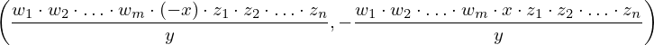 |
| 3 | Operation | operator: 10 operands: 5 | 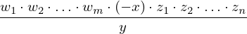 |
| 4 | Operation | operator: 15 operand: 8 | 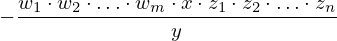 |
| 5 | ExprTuple | 7, 14 | 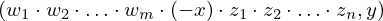 |
| 6 | ExprTuple | 8 | 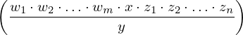 |
| 7 | Operation | operator: 17 operands: 9 | 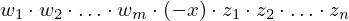 |
| 8 | Operation | operator: 10 operands: 11 | 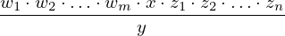 |
| 9 | ExprTuple | 19, 12, 21 | 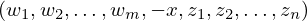 |
| 10 | Literal |  | |
| 11 | ExprTuple | 13, 14 | 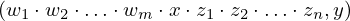 |
| 12 | Operation | operator: 15 operand: 20 |  |
| 13 | Operation | operator: 17 operands: 18 | |
| 14 | Variable |  | |
| 15 | Literal |  | |
| 16 | ExprTuple | 20 |  |
| 17 | Literal |  | |
| 18 | ExprTuple | 19, 20, 21 | 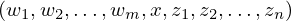 |
| 19 | ExprRange | lambda_map: 22 start_index: 25 end_index: 23 | |
| 20 | Variable |  | |
| 21 | ExprRange | lambda_map: 24 start_index: 25 end_index: 26 | 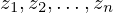 |
| 22 | Lambda | parameter: 32 body: 27 | |
| 23 | Variable |  | |
| 24 | Lambda | parameter: 32 body: 28 | |
| 25 | Literal |  | |
| 26 | Variable |  | |
| 27 | IndexedVar | variable: 29 index: 32 | |
| 28 | IndexedVar | variable: 30 index: 32 | 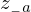 |
| 29 | Variable |  | |
| 30 | Variable |  | |
| 31 | ExprTuple | 32 |  |
| 32 | Variable |  |